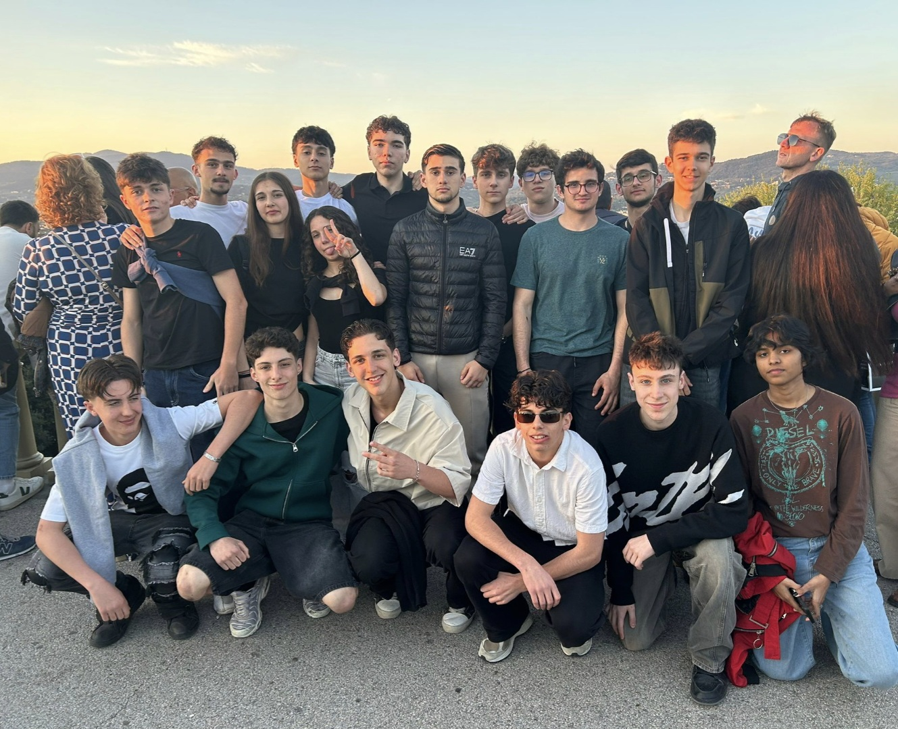

La classe 4°Qsa del liceo scientifico da Vinci (a Treto) è composta attualmente da 21 studenti. La sezione ha indirizzo scienze applicate e ha come coordinatrice la professoressa Celestina Canzian. La classe si è formata nell'annata 2023/2024 e fin da quel momento sono passati vari studenti.